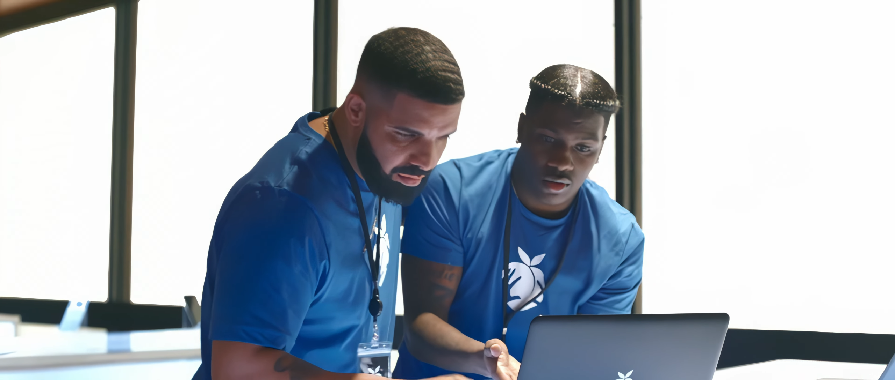

Duração da UC: 50 Horas
Formadora: Matilde Matos
Ao longo desta Unidade Curricular de Inglês Iniciação, tive a oportunidade de rever e consolidar conhecimentos que já possuía anteriormente, uma vez que já tinha um bom domínio da língua inglesa, tanto a nível da compreensão como da comunicação.
Durante as aulas, foram abordados conteúdos relacionados com apresentações pessoais, cumprimentos, vocabulário do quotidiano, números, datas, horas, profissões e descrição de pessoas. Foram também revistos aspetos gramaticais, como o verbo to be, o "Present Simple", os "Personal Pronouns", os artigos definidos e indefinidos e a construção de frases afirmativas, negativas e interrogativas.

Apesar de estes conteúdos serem, praticamente todos familiares para mim, a sua revisão permitiu-me relembrar regras gramaticais e expressões que nem sempre utilizava com frequência. Na minha vida pessoal mantenho bastante contacto com a língua inglesa e considero importante uma vez que esta é bastante utilizada no dia a dia, nomeadamente na Internet, no trabalho, em viagens e na comunicação com pessoas de diferentes nacionalidades.
Ao longo desta UC, consegui reforçar os meus conhecimentos, recordar conteúdos importantes e aprender termos contabilisticos em inglês muitos quais nunca tinha ouvido, consolidando a minha capacidade de compreender e utilizar o inglês em situações mais formais no qual tenho pouca experiência.
Em conclusão, considero que os objetivos desta Unidade Curricular foram cumpridos. Para mim, esta experiência funcionou sobretudo como uma oportunidade de revisão e consolidação de conhecimentos previamente adquiridos, permitindo-me reforçar as bases da língua inglesa e valorizar a importância da aprendizagem contínua.
Email: rafaelpereira20@outlook.pt
GitHub: VoidRafouz